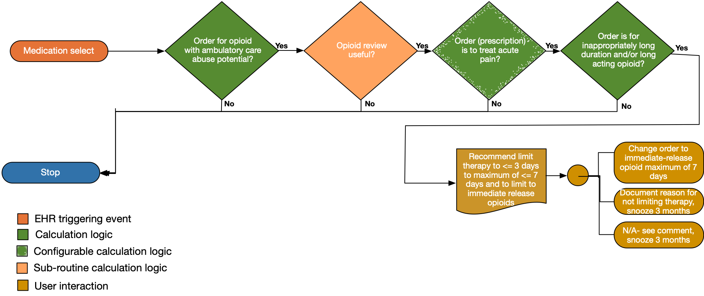

Long-term opioid use often begins with treatment of acute pain. When opioids are used for acute pain, clinicians should prescribe the lowest effective dose of immediate-release opioids and should prescribe no greater quantity than needed for the expected duration of pain severe enough to require opioids. Three days or less will often be sufficient; more than seven days will rarely be needed (recommendation category: A, evidence type: 4).
Provide links to the CDC Guidance.
| Definition | Expression | Data (Terminology) Requirement |
|---|---|---|
| Order for opioid with ambulatory use potential | Current order for opioids in relevant value set – ideally the order should be selected prior to being committed to the system | Opioids with ambulatory use potential |
| Order is to treat acute pain | Existing order duration is < 28 days | Same as order – Opioids with ambulatory use potential |
| Order is for long-acting opioid | If current order is for long-acting opioids, the clinician is notified even if the prescription duration is 7 days or less. | Long-acting opioids |
The following artifacts formalize the description of the logic and behavior defined by this recommendation.
| Resource | Type | Description |
|---|---|---|
| Opioid Terminology Management Knowledgdebase v0.1.0 Logic (OMTK) Library | Library | CQL Library that provides logic for implementation of opioid management functionality including Milligram Morphine Equivalents (MME). |
| Opioid Terminology Management Knowledgebase v0.1.0 Logic (OMTK) | CQL Source | For reference, the complete CQL source for the OMTK Logic Library. |
| Opioid Terminology Management Knowledgebase v0.1.0 Logic (OMTK) | ELM Source | For reference, the complete ELM source for the OMTK Logic Library. |
| Opioid Terminology Management Knowledgdebase v0.0.1 Logic (OMTK) Library | Library | CQL Library that provides logic for implementation of opioid management functionality including Milligram Morphine Equivalents (MME). |
| Opioid Terminology Management Knowledgebase v0.0.1 Logic (OMTK) | CQL Source | For reference, the complete CQL source for the OMTK Logic Library. |
| Opioid Terminology Management Knowledgebase v0.0.1 Logic (OMTK) | ELM Source | For reference, the complete ELM source for the OMTK Logic Library. |
| Opioid Terminology Management Knowledgdebase v0.0.1 Data (OMTK) Library | Library | CQL Library that provides logic for implementation of opioid management functionality including Milligram Morphine Equivalents (MME). |
| Opioid Terminology Management Knowledgebase v0.1.0 Model Info (OMTK) | XML Source | For reference, the complete XML source for the OMTK Model Info. |
| Opioid Terminology Management Knowledgebase v0.0.1 Data (OMTK) | CQL Source | For reference, the complete CQL source for the OMTK Logic Library. |
| Opioid Terminology Management Knowledgebase v0.0.1 Data (OMTK) | ELM Source | For reference, the complete ELM source for the OMTK Logic Library. |
| Opioid Terminology Management Knowledgdebase v0.0.2 Data (OMTK) Library | Library | CQL Library that provides logic for implementation of opioid management functionality including Milligram Morphine Equivalents (MME). |
| Opioid Terminology Management Knowledgebase v0.0.2 Data (OMTK) | CQL Source | For reference, the complete CQL source for the OMTK Logic Library. |
| Opioid Terminology Management Knowledgebase v0.0.2 Data (OMTK) | ELM Source | For reference, the complete ELM source for the OMTK Logic Library. |
| Common Opioid Decision Support Logic | Library | CQL Library that provides common logic for the recommendations |
| Common Opioid Decision Support Logic | R4 CQL Source | For reference, the complete CQL source for the common logic. |
| Common Opioid Decision Support Logic | R4 ELM Source | For reference, the complete ELM source for the common logic. |
| CDC Opioid Prescribing Guideline Recommendation #6 | PlanDefinition | Event-Condition-Action rule that implements behavior for CDC Opioid Prescribing Guideline Recommendation #6 |
| Recommendation #6 - prescribe immediate-release opioids instead of extended-release/long-acting (ER/LA) opioids | Library | Defines the data requirements to support evaluation of recommendation #6 |
| Recommendation #6 - DESCRIPTION HERE prescribe immediate-release opioids instead of extended-release/long-acting (ER/LA) opioids | R4 CQL Source | For reference, the complete CQL content for recommendation #6 |
| Recommendation #6 - DESCRIPTION HERE prescribe immediate-release opioids instead of extended-release/long-acting (ER/LA) opioids | R4 ELM Source | For reference, the complete ELM content for recommendation #6 |
The following STU3 artifacts formalize the description of the logic and behavior defined by this recommendation.
| Resource | Type | Description |
|---|---|---|
| Common Opioid Decision Support Logic | STU3 CQL Source | For reference, the complete CQL source for the common logic. |
| Common Opioid Decision Support Logic | STU3 ELM Source | For reference, the complete ELM source for the common logic. |
| Recommendation #6 - DESCRIPTION HERE prescribe immediate-release opioids instead of extended-release/long-acting (ER/LA) opioids | STU3 CQL Source | For reference, the complete CQL content for recommendation #6 |
| Recommendation #6 - DESCRIPTION HERE prescribe immediate-release opioids instead of extended-release/long-acting (ER/LA) opioids | STU3 ELM Source | For reference, the complete ELM content for recommendation #6 |
The following DSTU2 artifacts formalize the description of the logic and behavior defined by this recommendation.
| Resource | Type | Description |
|---|---|---|
| Common Opioid Decision Support Logic | DSTU2 CQL Source | For reference, the complete CQL source for the common logic. |
| Common Opioid Decision Support Logic | DSTU2 ELM Source | For reference, the complete ELM source for the common logic. |
| Recommendation #6 - DESCRIPTION HERE | DSTU2 CQL Source | For reference, the complete CQL content for recommendation #6 |
| Recommendation #6 - DESCRIPTION HERE | DSTU2 ELM Source | For reference, the complete ELM content for recommendation #6 |